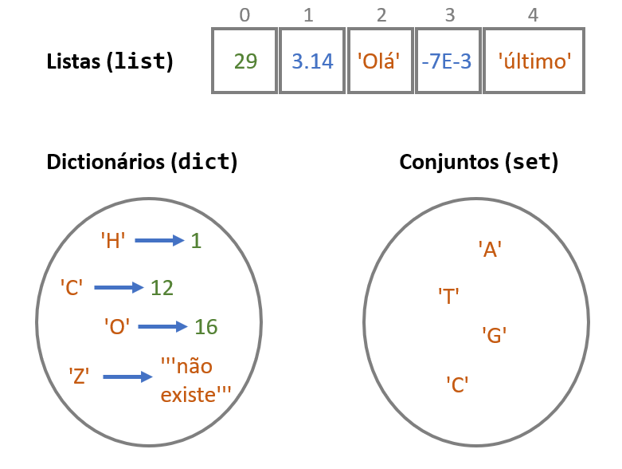

2. Coleções e iterações#
2.1. Revisão sobre objetos#
No capítulo anterior vimos que uma parte importante de um programa consiste na criação e modificação dos valores de “objetos”.
Estes objetos são, na verdade, representados na memória do computador. O acesso a estes objetos é feito à custa de um nome.
A linguagem Python suporta uma variedade de tipos de objetos, dos quais já vimos os números e as strings.
n_aminoácidos = 20 # número inteiro
bases = 'AUCG' # string
print(f'Existem {n_aminoácidos} aminoácidos e as bases do mRNA são {bases}')
Existem 20 aminoácidos e as bases do mRNA são AUCG
2.2. Coleções#
Este capítulo diz respeito a objetos designados genericamente por “coleções”.
Definição
Coleções são objetos que contêm mais do que um valor.
As principais coleções usadas em Python são:
listas
dicionários
conjuntos
Mas convém também englobar as strings, vistas no capítulo anterior, neste universo das coleções, uma vez que partilham muitas das propriedades com as coleções acima referidas:
strings
Uma definição muito breve e simples destas 3 coleções:

Uma lista (em inglês, list) é uma coleção de elementos em que cada um deles tem, implicitamente, uma posição. Estas posições estão numeradas a partir de zero. A posição de um elemento chama-se índice.
Um dicionário (em inglês, dictionary) é uma coleção obtida pela associação de “chaves” a “valores”. Cada elemento de um dicionário tem uma chave e um valor. Não existe uma ordenação implícita num dicionário, mas as chaves, que não se repetem, têm um papel análogo aos índices das listas.
Um conjunto (em inglês, set) é apenas uma coleção de elementos que não se repetem, sem posições ou chaves. E, para já, não há mais nada a dizer sobre os conjuntos.
A criação explícita destas coleções num programa é feita desta maneira:
uma_lista = [2, 4, 3.1415, 'eu aqui', 1j, "fim da lista"] # lista
um_dict = {'H': 1 , 'Li': 3, 'Na': 11, 'K': 19} # dicionário
um_set = {'A', 'T', 'C', 'G'} # conjunto
s = 'Eu sou uma pequena string' # string
Vejamos particularmente cada tipo diferente de coleções.
2.2.1. Listas#
As listas são uma das coleções da linguagem Python mais usadas.
Vejamos como definir listas.
São usados [] para definir, de uma forma literal, uma lista, separando os elementos por ,.
vários = [2, 4, 3.1415, 'eu aqui', "fim da lista"]
print(vários)
[2, 4, 3.1415, 'eu aqui', 'fim da lista']
As listas são objetos e, por isso, podemos atribuír-lhes nomes. Como se pode ver no exemplo, foi atribuído o nome
vários a toda a lista. Este é um facto importante: um único nome serve para nos referirmos a toda a lista na sua globalidade.
As listas podem ter elementos de vários tipos, (números, strings, números complexos) e estes elementos podem até ser o resultado de expressões:
a = [19, 14/2, 5.0**3, 'Bom dia']
b = 1
c = [b, b+1, (b+2)**3]
print('a =', a)
print('c =', c)
a = [19, 7.0, 125.0, 'Bom dia']
c = [1, 2, 27]
Neste exemplo, a lista a contem 3 números e uma string. O valor de
dois dos números é o resultado de uma expressão.
Note-se, também, que na lista c os valores dos elementos são
calculados usando o valor atribuído ao nome b para calcular os
elementos da lista.
2.2.2. Função list()#
Além da criação literal e explícita de uma lista, a função list() permite transformar objetos de outros tipos em listas, se fôr possível:
# transformação de uma string numa lista
seql = list('ATGGTCAAACTTGTT')
print(seql)
['A', 'T', 'G', 'G', 'T', 'C', 'A', 'A', 'A', 'C', 'T', 'T', 'G', 'T', 'T']
2.2.3. Indexação de listas#
Uma propriedade fundamental das listas é que a ordem dos elementos tem significado e cada um deles tem, implicitamente, uma posição, o seu índice.
Num programa podemos nos referir a um só elemento da lista a partir da sua posição, fazendo uma “indexação” da lista com um número inteiro.
Um exemplo:
a = [19, 14/2, 5.0**3, 'Bom dia']
# 0 1 2 3
print(a[0])
print(a[1])
print(a[2])
print(a[3])
19
7.0
125.0
Bom dia
Neste exemplo, cada print() mostra um elemento diferente da lista.
Com uma indexação, obtemos o elemento que está na posição i de uma lista escrevendo
<nome da lista>[i]
Isto é, usamos também aqui [] para indexar a lista, mas à frente do nome da lista.
Até podemos nem dar nome a uma lista. Podemos indexar logo a seguir à definição:
dias_abril = [31, 28, 31, 30, 31][3]
print(dias_abril)
30
Nota: os primeiros [] estão a definir a lista e os segundos [] a indexar a lista, obtendo o elemento que está na posição 3.
As posições variam em que intervalo?
As posições começam de zero e vão até \(n-1\) em que \(n\) é o número de elementos da lista.
São sempre números inteiros.
2.2.4. Dicionários#
Definição
Dicionários são associações entre chaves e valores.
d = {'H': 1, 'Li': 3, 'Na': 11, 'K': 19}
Neste exemplo,
'H','Li','Na','K', são as chaves do dicionário
1, 3, 11, 19, são os respetivos valores
Na definição de um dicionário
são usadas
{}para delimitar o dicionáriosão usadas
,para separar cada par chave: valorsão usados
:para separar a chave do valor dentro de cada par.
2.2.5. Indexação de dicionários#
Ao contrário das listas, os elementos não têm posições, mas um dicionário pode ser “indexável” utilizando as chaves para obter os respetivos valores:
d = {'H':1, 'Li':3, 'Na':11, 'K':19}
print('d =', d)
print(d['K'])
print(d['Li'])
d = {'H': 1, 'Li': 3, 'Na': 11, 'K': 19}
19
3
Para indexar um dicionário, obtemos o elemento que tem a chave k escrevendo
<nome do dicionário>[k]
Isto é, usamos também aqui [] para indexar os dicionários.
Podemos até indexar logo a seguir a definir o dicionário:
n_K = {'H':1, 'Li':3, 'Na':11, 'K':19} ['K']
print('Número atómico do potássio é', n_K)
Número atómico do potássio é 19
2.2.6. Strings e indexação de strings#
Vimos as strings no capítulo anterior. Porquê introduzir aqui, num capítulo dedicado às coleções, as strings de novo?
Definição
As strings podem ser entendidas como uma coleções de caracteres (letras, símbolos, pontuação, espaços, números)
As strings são aparentadas com as listas: as strings também têm uma numeração das posições dos caracteres, a contar do zero, e também são “indexáveis”, isto é, podemos obter o caracter que está numa determinada posição, usando [].
s = 'Eu sou uma pequena string'
# 0123456789
print(s[0])
print(s[3])
print(s[8])
E
s
m
Note-se que os espaços contam como caracteres.
2.2.7. Conjuntos#
Um conjunto (set) é uma coleção com características simples: é uma coleção de elementos sem chaves e sem posições.
aminoácidos = {'I', 'Y', 'P', 'W', 'C', 'M', 'R',
'L', 'K', 'H', 'V', 'D', 'F', 'N',
'S', 'T', 'A', 'G', 'Q', 'E'}
print(aminoácidos)
{'S', 'E', 'R', 'T', 'L', 'D', 'N', 'I', 'K', 'V', 'A', 'H', 'W', 'Q', 'F', 'M', 'Y', 'C', 'P', 'G'}
Ao definir um conjunto usamos {} para delimitar e separamos os elementos por ,
A utilidade dos conjuntos torna-se mais clara sabendo que eles suportam operações típicas dos conjuntos da matemática, por exemplo a interseção e a reunião. Mais tarde veremos alguns exemplos.
Os conjuntos não são indexáveis.
Mas, uma curiosidade, não aceitam elementos repetidos:
bases = {'A', 'A', 'C', 'C', 'U', 'G'}
print(bases)
{'A', 'U', 'C', 'G'}
2.2.8. len() e operador in#
Apesar da especificidade de cada tipo de coleção, há três funcionalidades que são comuns a todas as coleções:
determinar o número de elementos de uma coleção, com a função
len()testar se um valor faz parte de uma coleção, com o operador
inaplicar um conjunto de comandos a todos os elementos de uma coleção, uma a um, com o comando
for
Comecemos pelas duas primeiras:
A função len() (abreviatura da palavra inglesa length) pode ser aplicada a qualquer coleção, tendo como resultado o
número de elementos contidos nessa coleção.
a = [2,4,6,8,10, 'viria o 12', 'e depois o 14'] # lista
s = 'Eu sou uma pequena string' # string
d = {'H':1, 'Li':3, 'Na':11, 'K':19} # dicionário
print(len(a))
print(len(s))
print(len(d))
7
25
4
Repare-se que, no caso das strings todos os caracteres entram para a contagem como elementos da string. No caso dos dicionários, contamos o número de pares chave: valor.
Para objetos que definimos explicitamente a função len() não parece ter muita utilidade.
Imagine um programa maior, capaz de processar um número elevado de sequências de proteínas. O comprimento de uma proteína é uma característica importante. A função len() seria uma ferramenta importante num programa desses.
seq = 'MSSLVTLNNGLKMPLVGLGCWKIDKKVCANQIYEAIKLGYRLFDGACDYGNEKEVGEGIR'
print(f'A proteína\n{seq}')
print('tem', len(seq), 'aminoácidos')
A proteína
MSSLVTLNNGLKMPLVGLGCWKIDKKVCANQIYEAIKLGYRLFDGACDYGNEKEVGEGIR
tem 60 aminoácidos
O “operador” in funciona como teste de inclusão: resulta True ou False consoante um
elemento está ou não contido numa coleção. Funciona com qualquer tipo de coleção.
nums = [1,2,3,4,5,6,7,8,9,10]
if 4 in nums:
print(4, 'existe')
else:
print(4, 'não existe')
4 existe
Um exemplo com strings:
seq = 'ATGGTCAAACTTGTTGACTGCAAATGCGTACGT'
if 'U' in seq:
print('Existe', 'U')
else:
print('Não existe', 'U')
if 'TGT' in seq:
print('Existe', 'TGT')
else:
print('Não existe', 'TGT')
Não existe U
Existe TGT
Repare-se no segundo exemplo: posso testar se existe uma string com mais do que um caracter.
Com dicionários, é verificado se um elemento está nas chaves ( e não nos valores):
grupo1 = {'H':1, 'Li':3, 'Na':11, 'K':19}
print('Mg' in grupo1)
False
2.3. Indexação com “Slices”#
Já vimos que podemos indexar listas e strings, usando [] e a posição
do elemento.
Os [] podem ser usados para um outro tipo de indexação de listas ou
strings: os slices (em português: “fatias”). os slices são uma generalização
de indexação, em que, em vez de obtermos um único elemento obtemos vários elementos pelas suas posições.
A forma mais vulgar de utilização de slices é a extração de elementos consecutivos.
Escrevemos desta forma:
string[início : fim]
e obtemos todos os caracteres deste a posição início até à posição fim, exclusivé.
Nota
A slice de uma string dá uma substring nova
A slice de uma lista dá uma “sublista” nova
a = "O Neo tomou o comprimido vermelho"
# 012345678901234567890123456789012
print(a[2:5])
print(a[0:5])
print(a[6:-1])
Neo
O Neo
tomou o comprimido vermelh
Repare como a última posição é “exclusivé”.
Importante
Podemos omitir o número antes dos :
Isto significa que a slice começa do princípio
Podemos omitir o número depois dos :
Isto significa que a slice vai até ao fim , inclusivé o último elemento.
a = "O Neo tomou o comprimido vermelho"
# 012345678901234567890123456789012
print(a[ :5])
print(a[6: ])
print(a[ : ])
O Neo
tomou o comprimido vermelho
O Neo tomou o comprimido vermelho
Repare-se como um dos exemplos resulta na cópia integral da string
Mais um exemplo, como obter o primeiro e o último codão:
seq = "AUGUUCAAGGAGUAAUGCCCCCGACUA"
c = seq[ :3]
d = seq[-3: ]
print('O primeiro codão é', c)
print('O último codão é', d)
O primeiro codão é AUG
O último codão é CUA
Na realidade, a forma geral de uma slice é
string[início : fim(exclusivé) : passo]
Isto é, opcionalmente pode ser indicado um passo que faz com que a slice “salte” de passo em `passo letras.
No programa seguinte, obtêm-se os caracteres da string desde a posição 0 até à posição 12, exclusivé, saltando de 2 em 2:
a = "O Neo tomou o comprimido vermelho"
# 012345678901234567890123456789012
print(a[0:12:2])
ONotmu
2.3.1. Funções de listas, dicionários e conjuntos#
Um pouco mais à frente serão apresentadas funções “associadas” a cada um destes tipos de coleções. São estas funções que tornam a utilização de coleções muito poderosas.
Estas funções têm a forma geral
coleção.função(argumentos)
Vejamos, desde já, um pequeno exemplo: a função .count(), que pode ser usada com listas e strings, conta número de elementos (ou caracteres).
# Quantas glicinas existem nesta sequência?
seq = 'MSSLVTLNNGLKMPLVGLGCWKIDKKVCANQIYEAIKLGYRLFDGACDYGNEKEVGEGIR'
nG = seq.count('G')
print(nG, 'glicinas')
# Quantos meses do ano têm 30 dias?
n_dias = [31, 28, 31, 30, 31, 30, 31, 31, 30, 31, 30, 31]
n30 = n_dias.count(30)
print(n30, 'meses têm 30 dias')
8 glicinas
4 meses têm 30 dias
As restantes funções serão o foco deste e do próximo capítulo (não todas) mas aqui vai a referência para as funções disponíveis na documentação do Python, em <docs.pyhton.org>:
As funções de strings são, de longe, as mais numerosas.
Algo trivial é comum a todas as coleções: a possibilidade de criarmos “coleções vazias”
2.4. Coleções vazias#
Coleções vazias são simplesmente coleções sem nenhum elemento. Podemos criá-las explicitamente desta forma:
# lista vazia
a = []
# string vazia
s = ''
# dicionário vazio
d = {}
# conjunto vazio
c = set()
print(a)
print(s)
print(d)
print(c)
[]
{}
set()
Nota
O que aconteceu à string vazia?
A função print() tira as aspas quando apresenta strings, logo, aparentemente não
apareceu a string (embora haja uma mudança de linha)
Porque temos de usar set() para o conjunto vazio?
Porque {} já está reservado para os dicionários vazios. Mas, recorde-se que
para definir explicitamente um conjunto usamos {} para delimitar o conjunto:
c = {6, 9, 'A', 'T'}
Mas não usamos pares chave:valôr entre {}. Isso seria um dicionário.
A utilidade destas versões vazias é clara: muitas vezes num programa precisamos de começar por com um coleção vazia para depois, ao longo do programa, ir acrescentando elementos.
s = ''
s = s + 'qualquer'
s = s + ' ' + 'coisa'
print(s)
qualquer coisa
2.5. Listas em compreensão#
Existe uma outra forma muito conveniente e compacta de construír listas num programa, as listas em compreensão.
Esta forma assemelha-se à notação matemática de descrever um conjunto através do seu “termo geral”.
A ideia é obter uma lista pela transformação de uma outra lista de partida, indicando uma expressão para essa transformação. Essa expressão indica a operação a efectuar a cada elemento da lista de partida.
Um exemplo mostra a notação a usar:
# Potências de 2 numa lista:
potências2 = [2**n for n in [0, 1, 2, 3, 4 ,5, 6, 7, 8]]
print(potências2)
[1, 2, 4, 8, 16, 32, 64, 128, 256]
Em resumo, entre[] indica-se, em primeiro lugar, um “termo geral”, neste caso 2**n. De seguida, um comando for para passar pelos elementos de uma lista original de partida.
À frente do for, o nome n é o nome a dar a cada elemento da lista de partida, um a um. Para construír a lista nova n vai tomando os valores 0...1...2... ...7...8 e, cada vez que toma um valôr novo, o resultado de 2**n é inserido na lista que se está a construír.
Tudo está entre [], para indicar que estamos a construír uma lista.
Note-se a analogia com a notação matemática de indicar um conjunto “em compreensão”
q = [2**n for n in [0, 1, 2, 3, 4 ,5, 6, 7, 8]]
e
\(q = \{n^2 : n=0, 1, 2, ... ,8 \}\)
Um outro exemplo
# Iniciais de palavras
palavras = ['Hoje', 'é', 'quarta', 'e', 'estamos', 'em', 'Abril']
iniciais = [p[0] for p in palavras]
print(iniciais)
['H', 'é', 'q', 'e', 'e', 'e', 'A']
As listas em compreensão é um mecanismo muito flexível para gerar listas num programa. Podemos definir funções para calcular o termo geral de uma lista em compreensão.
Por exemplo, se quisermos indicar se os aminoácidos de uma sequência são básicos ou ácidos, podemos criar uma função para indicar o tipo de aminoácido:
def tipo_de_aa(aa):
if aa in 'KR':
tipo = 'basico'
elif aa in 'DE':
tipo = 'ácido'
else:
tipo = 'outro'
return tipo
seq = 'MKIDKKVCANE'
tipos = [tipo_de_aa(a) for a in seq]
print(tipos)
['outro', 'basico', 'outro', 'ácido', 'basico', 'basico', 'outro', 'outro', 'outro', 'outro', 'ácido']
2.6. Listas em compreensão com filtro#
É possível, numa lista em compreensão, impor uma condição que os elementos gerados devem verificar para serem incluídos na lista.
Os elementos gerados são, assim, “filtrados”.
# Números ímpares que sejam múltiplos de 7
nums = [0, 1, 2, 3, 4 ,5, 6, 7, 8, 9, 10, 11, 12, 13, 14]
ímpares_m7 = [2 * n + 1 for n in nums if (2 * n + 1) % 7 == 0]
print(ímpares_m7)
[7, 21]
# Glicinas e Valinas numa sequência
seq = 'MSSLVTLNNGLKMPLVGLGCWKIDKKVCANQIYEAIKLGYRLFDGACDYGNEKEVGEGIR'
GV = [a for a in seq if a == 'G' or a == 'V']
print(GV)
['V', 'G', 'V', 'G', 'G', 'V', 'G', 'G', 'G', 'V', 'G', 'G']
Note-se que a disjunção lógica ... if a == 'G' or a == 'V' pode ser reescrita numa forma mais compacta usando o operador in:
# Glicinas e Valinas numa sequência
seq = 'MSSLVTLNNGLKMPLVGLGCWKIDKKVCANQIYEAIKLGYRLFDGACDYGNEKEVGEGIR'
GV = [a for a in seq if a in 'GV']
print(GV)
['V', 'G', 'V', 'G', 'G', 'V', 'G', 'G', 'G', 'V', 'G', 'G']
2.6.1. Dicionários em compreensão#
Tal como as listas, podemos construir dicionários novos por dicionários em compreensão
Basicamente, comparando com as listas em compreensão, usamos {} porque estamos a construír dicionários e
agora temos de indicar o termo geral das chaves, depois usar : e finalmente indicar o termo geral dos
valores.
Como primeiro exemplo, o programa anterior poderia ser modificado de modo a associar cada aminoácido ao seu tipo:
def tipo_de_aa(aa):
if aa in 'KR':
tipo = 'basico'
elif aa in 'DE':
tipo = 'ácido'
else:
tipo = 'outro'
return tipo
seq = 'MKIDKKVCANE'
tipos = {a: tipo_de_aa(a) for a in seq}
print(tipos)
{'M': 'outro', 'K': 'basico', 'I': 'outro', 'D': 'ácido', 'V': 'outro', 'C': 'outro', 'A': 'outro', 'N': 'outro', 'E': 'ácido'}
repare-se na grande semelhança entre as listas em compreensão e os dicionários em compreensão.
Um outro exemplo, com alguma utilidade prática, será contar cada um dos 20 aminoácidos numa sequência de uma proteína.
Recorde-se que a função .count() usada com strings permite contar o número de ocorrências de uma letra dentro de uma string.
# contagem dos 20 aminoácidos numa sequência
seq = 'MSSLVTLNNGLKMPLVGLGCWKIDKKVCANQIYEAIKLGYRLFDGACDYGNEKEVGEGIR'
aminoácidos = 'ACDEFGHIKLMNPQRSTVWY'
contagens = {a: seq.count(a) for a in aminoácidos}
print(contagens)
{'A': 3, 'C': 3, 'D': 3, 'E': 4, 'F': 1, 'G': 8, 'H': 0, 'I': 4, 'K': 6, 'L': 7, 'M': 2, 'N': 4, 'P': 1, 'Q': 1, 'R': 2, 'S': 2, 'T': 1, 'V': 4, 'W': 1, 'Y': 3}
2.7. range()#
O primeiro exemplo das listas em compreensão obrigou a indicar explicitamente no programa a lista
[0, 1, 2, 3, 4 ,5, 6, 7, 8].
A linguagem Python tem disponível a função range() que pode ser usada em situaçãoes
em que necessitamos de gerar números inteiros consecutivos.
A função range(), que pode ter até 3 argumentos,
range(início, fim, passo), gera uma sequência de números inteiros, desde um número inteiro inicial (o
início) até um número inteiro final exclusivé (o fim), com um
determinado espaçamento (o passo).
Notas
O número inicial e o “passo” são opcionais.
Se forem omitidos,
o início é 0
o passo é 1
Não esquecer que o valor do fim é excluído
Para melhor compreender estas regras, podemos mostrar os
resultados da função range(), transformando
os resultados do range() numa lista (com a função list()).
print('-- range(12) ----------')
# começa em 0, acaba em 12 (exclusivé), e salta de 1 em 1.
nums = list(range(12))
print(nums)
-- range(12) ----------
[0, 1, 2, 3, 4, 5, 6, 7, 8, 9, 10, 11]
print('-- range(5, 12) ----------')
# começa em 5, acaba em 12 (exclusivé).
nums = list(range(5, 12))
print(nums)
-- range(5, 12) ----------
[5, 6, 7, 8, 9, 10, 11]
print('-- range(5, 12, 2) ----------')
# começa em 5, acaba em 12 (exclusivé) e salta de 2 em 2.
nums = list(range(5, 12, 2))
print(nums)
-- range(5, 12, 2) ----------
[5, 7, 9, 11]
Continuando com os exemplos das listas em compreensão:
# Potências de 2 numa lista:
# primeiros 50
potências2 = [2**n for n in range(50)]
print(potências2)
[1, 2, 4, 8, 16, 32, 64, 128, 256, 512, 1024, 2048, 4096, 8192, 16384, 32768, 65536, 131072, 262144, 524288, 1048576, 2097152, 4194304, 8388608, 16777216, 33554432, 67108864, 134217728, 268435456, 536870912, 1073741824, 2147483648, 4294967296, 8589934592, 17179869184, 34359738368, 68719476736, 137438953472, 274877906944, 549755813888, 1099511627776, 2199023255552, 4398046511104, 8796093022208, 17592186044416, 35184372088832, 70368744177664, 140737488355328, 281474976710656, 562949953421312]
# Números ímpares que sejam múltiplos de 7
# (até 200)
ímpares = range(1, 200, 2)
ímpares_m7 = [n for n in ímpares if n % 7 == 0]
print(ímpares_m7)
[7, 21, 35, 49, 63, 77, 91, 105, 119, 133, 147, 161, 175, 189]
Este exemplo mostra que podemos, numa lista em compreensão, impôr condições (com if) aos valores
da lista, “filtrando” certos elementos.
Um exemplo um pouco mais elaborado:
Problema
Dada uma sequência de ácido nucleíco, separar os codões numa lista
seq = 'ATGGTCAAACTTGTTGACTGCAAATGCGTACGT'
# 0 3 6 9
ínício_codões = range(0, len(seq), 3)
print('Posições iniciais dos codões:\n', list(ínício_codões))
codões = [seq[i] + seq[i+1] + seq[i+2] for i in ínício_codões]
print('\nSequência:\n', seq)
print('Codões:\n', codões)
Posições iniciais dos codões:
[0, 3, 6, 9, 12, 15, 18, 21, 24, 27, 30]
Sequência:
ATGGTCAAACTTGTTGACTGCAAATGCGTACGT
Codões:
['ATG', 'GTC', 'AAA', 'CTT', 'GTT', 'GAC', 'TGC', 'AAA', 'TGC', 'GTA', 'CGT']
O comentário na segunda linha indica a posição, na string da sequência, do começo de cada codão.
A “soma” das 3 letras de cada codão pode-se simplificar com a indexação com um slice:
seq = 'ATGGTCAAACTTGTTGACTGCAAATGCGTACGT'
# 0 3 6 9
ínício_codões = range(0, len(seq), 3)
print('Posições iniciais dos codões:\n', list(ínício_codões))
codões = [seq[i:i+3] for i in ínício_codões]
print('\nSequência:\n', seq)
print('Codões:\n', codões)
Posições iniciais dos codões:
[0, 3, 6, 9, 12, 15, 18, 21, 24, 27, 30]
Sequência:
ATGGTCAAACTTGTTGACTGCAAATGCGTACGT
Codões:
['ATG', 'GTC', 'AAA', 'CTT', 'GTT', 'GAC', 'TGC', 'AAA', 'TGC', 'GTA', 'CGT']
Mais um exemplo. A função .remove() retira a primeira ocorrência de um
elemento numa lista. Qual a maneira simples de retirar todas as ocorrências
desse elemento de uma só vez?
Usando uma lista em compreensão.
Exemplo:
Retirar todas as ocorrências de um elemento de uma lista
# Remover todas as ocorrências de "Bad"
a = ['Good','Nice','OK','Bad','Cool','Bad','OK']
a_clean = [x for x in a if x != 'Bad']
print(a)
print(a_clean)
['Good', 'Nice', 'OK', 'Bad', 'Cool', 'Bad', 'OK']
['Good', 'Nice', 'OK', 'Cool', 'OK']
Neste exemplo a condição if é muito mais importante do que o “termo geral”, daí
a estranha construção [x for x in ...]. Se a lista em compreensão fosse apenas
a_clean = [x for x in a] então copiaríamos a lista a para a lista a_clean sem filtrar os elementos. O if está a fazer o trabalho de filtrar os elementos "Bad"
Exemplo:
Problema: retirar todas as ocorrências dos elemento pertencentes a uma “lista negra”
black_list = ['Bad', 'So so']
a = ['Good','So so','OK','Bad','Cool','Bad','OK']
a_clean = [x for x in a if x not in black_list]
print(a)
print(a_clean)
['Good', 'So so', 'OK', 'Bad', 'Cool', 'Bad', 'OK']
['Good', 'OK', 'Cool', 'OK']
Leitura interessante:
2.8. Iterações: comando for#
Um dos conceitos que pode ser aplicado a qualquer coleção, sendo, já agora, um dos mais poderosos conceitos da linguagem Python (e de muitas outras linguagens de programação) consiste em aplicar um conjunto de instruções ou comandos a cada um dos elementos de uma coleção, um a um.
Iteração é termo técnico muitas vezes utilizado para designar estas repetições de comandos elemento a elemento.
Em Python é usado o comado for para esse efeito.
É melhor começar com um exemplo:
Problema
Mostrar uma tabela de raízes quadradas de 1 a 10
print('tabela de raízes quadradas')
nums = [1,2,3,4,5,6,7,8,9,10]
for n in nums:
root = n**0.5
print(n, root)
tabela de raízes quadradas
1 1.0
2 1.4142135623730951
3 1.7320508075688772
4 2.0
5 2.23606797749979
6 2.449489742783178
7 2.6457513110645907
8 2.8284271247461903
9 3.0
10 3.1622776601683795
O que se passou durante a execução deste programa?
O comando for provoca a repetição de um conjunto de comandos aplicando esses
comandos a todos os elementos de uma coleção, um a um.
(O número de repetições é igual ao número de elementos da coleção, uma vez que os comandos são aplicados a todos os elementos mas à vez, um a um)
A estrutura geral do comando for é:
Vamos ao pormenor:
Os comandos que são repetidos são aqueles que estão nas linhas a seguir à linha do comando for
e “alinhadas” um pouco mais para o interior do texto do programa. No exemplo, essas linhas são
root = n**0.5
print(n, root)
Esse alinhamento interior (indentação), que, por convenção, são 4 espaços, define as linhas que contêm os comando a repetir. Podemos por quaisquer comandos válidos nessas linhas.
Esta é uma regra geral da linguagem Python: o alinhamento do começo
das linhas define blocos. Já tínhamos visto a propósito dos
blocos if...elif...else.
As linhas a repetir fazem um cálculo de root, como a raíz quadrada de n (e print() de ne root).
O que é o n?
No comando for define-se n.
né um nome global que é dado a cada elemento da lista nums, um a um.
Cada vez que os comandos são repetidos, n toma um valor diferente: da primeira vez é igual a 1, da segunda vez é igual a 2 e assim sucessivamente. n toma todos os valores da lista nums.
Porquê a lista nums? A coleção à qual vão ser aplicados os comandos a repetir é aquela que estiver à frente
de in e antes de : (não esquecer os :, eles são obrigatórios, tal como o for e o in)
Recapitulando:
Em linguagem mais “humana” o comando for indica o seguinte procedimento:
Para cada elemento da lista
nums, e chamando esse elementon, repita-se as duas linhas seguintes,root = n**0.5eprint(n, root).
Vamos ver alguns exemplos da utilização de um comando for.
Problema
Procurar um conjunto de números numa lista maior de números
nums = [1,2,3,4,5,6,7,8,9,10,11,15,27, 30, 40]
a_procurar = [1, 4, 7, 20, 40]
for n in a_procurar:
if n in nums:
print(n, 'existe na lista')
else:
print(n, 'não existe na lista')
1 existe na lista
4 existe na lista
7 existe na lista
20 não existe na lista
40 existe na lista
Usando um exemplo do capítulo anterior,
Problema
Indicar quais os anos bissextos dentro de uma lista
# Anos bissextos (sem input())
anos = [2015, 2014, 2013, 2012, 2000, 1900, 1800]
for a in anos:
if a % 4 == 0 and not (a % 100 == 0 and not a % 400 == 0):
print(a , "é bissexto")
else:
print(a, "nao é bissexto")
2015 nao é bissexto
2014 nao é bissexto
2013 nao é bissexto
2012 é bissexto
2000 é bissexto
1900 nao é bissexto
1800 nao é bissexto
A iteração de uma string com o comando for “percorre” todos os caracteres da string, incluíndo os espaços
e a pontuação:
seq = 'ATGGT CAAAC TTGTT'
for b in seq:
print(b)
A
T
G
G
T
C
A
A
A
C
T
T
G
T
T
Um outro exemplo de for com uma string:
Problema
Dada a sequência de uma proteína, indicar a presença de lisinas (K)
Passar por todos os aminoácidos da sequência é simples, usamos um comando
for. Para testar se estamos na presença de um K, usamos um if:
seq = 'ADKHLILTAVGGCWFHVAFWEVEKAGAHKWE'
for aa in seq:
if aa == 'K':
print(aa)
K
K
K
Vamos agora supor que temos uma pequena extensão deste problema:
Problema
Dada a sequência de uma proteína, indicar a presença de lisinas (K) e leucinas (L)
Mais uma vez, percorremos os aminoácidos da sequência com for. Para
testar se estamos na presença de um K ou um L, usamos in para testar se o aminoácido pertence à string “KL”.
seq = 'ADKHLILTAVGGCWFHVAFWEVEKAGAHKWE'
for aa in seq:
if aa in 'KL':
print(aa)
K
L
L
K
K
Ou, para visualizar bem a posição das lisinas e leucinas:
seq = 'ADKHLILTAVGGCWFHVAFWEVEKAGAHKWE'
print(seq)
for aa in seq:
if aa in 'KL':
print(aa, end='')
else:
print('-', end='')
ADKHLILTAVGGCWFHVAFWEVEKAGAHKWE
--K-L-L----------------K----K--
print(, end=)
O argumento end= é usado na função print() para que não haja uma mudança de linha
no final daquilo que é apresentado por esta função. A mudança de linha é substituída
por qualquer outra string, indicada por end=.
No caso deste exemplo é indicado end='' ou seja,
absolutamente nada no final do print(). Isto faz com que os caracteres da segunda
linha apareçam consecutivamente e não em linhas separadas.
Finalmente, a iteração de um dicionário com o comando for “percorre” as chaves do dicionário (apenas as chaves).
grupo1 = {'H':1, 'Li':3, 'Na':11, 'K':19}
print('elementos do grupo 1')
for e in grupo1:
print(e)
elementos do grupo 1
H
Li
Na
K
Mas é fácil usar as chaves para obter uma tabela de chaves-valores, usando a indexação do dicionário com cada uma das chaves. Compare-se este exemplo com o anterior:
grupo1 = {'H':1, 'Li':3, 'Na':11, 'K':19}
print('elementos do grupo 1')
for e in grupo1:
print(e, '→', grupo1[e])
elementos do grupo 1
H → 1
Li → 3
Na → 11
K → 19
2.9. Iterações com “acumulações”#
Problema
Dada uma sequência de uma cadeia de DNA, “calcular” a cadeia complementar
Estratégia:
Obter as bases da cadeia, uma a uma (for)
Calcular a base complementar para cada base
Juntar as bases complementares (numa string)
seq = 'ATGGTCAAACTTGTTGACTGCAAATGCGTACGT'
seqcomp = ''
for b in seq:
if b == 'A':
bcomp = 'T'
elif b == 'T':
bcomp = 'A'
elif b == 'G':
bcomp = 'C'
else:
bcomp = 'G'
seqcomp = seqcomp + bcomp
print('sequência: ', seq)
print('complementar:', seqcomp)
sequência: ATGGTCAAACTTGTTGACTGCAAATGCGTACGT
complementar: TACCAGTTTGAACAACTGACGTTTACGCATGCA
A novidade neste exemplo é o uso de um “acumulador” de resultados parciais de uma operação.
Neste caso, o papel de seqcomp é o de “acumular” as bases complementares de sucessivas
bases obtidos da iteração dos elementos da string seq.
Inicialmente, antes do programa entrar no comando for, s tem o valor '', isto é, uma string vazia.
Cada vez que “passamos” a um novo valor b, isto é, a um novo valor da lista seq,
a base complementar é “somada” ao valor anterior de seqcomp, fazendo seqcomp = seqcomp + bcomp.
Assim, conseguimos acumular na string a soma de todas as bases complementares bcomp e, no final das repetições do comando for, seqcomp é igual à sequência.
Podemos, “dentro” do comando for monitirizar o que está a acontecer em todo o processo, com algumas funções print():
seq = 'ATGGTCAAACTTGTTGACTGCAAATGCGTACGT'
seqcomp = ''
for b in seq:
print('b →', b)
if b == 'A':
bcomp = 'T'
elif b == 'T':
bcomp = 'A'
elif b == 'G':
bcomp = 'C'
else:
bcomp = 'G'
print('bcomp →', bcomp)
seqcomp = seqcomp + bcomp
print('seqcomp →', seqcomp)
print('-'*30)
print('sequência: ', seq)
print('complementar:', seqcomp)
b → A
bcomp → T
seqcomp → T
------------------------------
b → T
bcomp → A
seqcomp → TA
------------------------------
b → G
bcomp → C
seqcomp → TAC
------------------------------
b → G
bcomp → C
seqcomp → TACC
------------------------------
b → T
bcomp → A
seqcomp → TACCA
------------------------------
b → C
bcomp → G
seqcomp → TACCAG
------------------------------
b → A
bcomp → T
seqcomp → TACCAGT
------------------------------
b → A
bcomp → T
seqcomp → TACCAGTT
------------------------------
b → A
bcomp → T
seqcomp → TACCAGTTT
------------------------------
b → C
bcomp → G
seqcomp → TACCAGTTTG
------------------------------
b → T
bcomp → A
seqcomp → TACCAGTTTGA
------------------------------
b → T
bcomp → A
seqcomp → TACCAGTTTGAA
------------------------------
b → G
bcomp → C
seqcomp → TACCAGTTTGAAC
------------------------------
b → T
bcomp → A
seqcomp → TACCAGTTTGAACA
------------------------------
b → T
bcomp → A
seqcomp → TACCAGTTTGAACAA
------------------------------
b → G
bcomp → C
seqcomp → TACCAGTTTGAACAAC
------------------------------
b → A
bcomp → T
seqcomp → TACCAGTTTGAACAACT
------------------------------
b → C
bcomp → G
seqcomp → TACCAGTTTGAACAACTG
------------------------------
b → T
bcomp → A
seqcomp → TACCAGTTTGAACAACTGA
------------------------------
b → G
bcomp → C
seqcomp → TACCAGTTTGAACAACTGAC
------------------------------
b → C
bcomp → G
seqcomp → TACCAGTTTGAACAACTGACG
------------------------------
b → A
bcomp → T
seqcomp → TACCAGTTTGAACAACTGACGT
------------------------------
b → A
bcomp → T
seqcomp → TACCAGTTTGAACAACTGACGTT
------------------------------
b → A
bcomp → T
seqcomp → TACCAGTTTGAACAACTGACGTTT
------------------------------
b → T
bcomp → A
seqcomp → TACCAGTTTGAACAACTGACGTTTA
------------------------------
b → G
bcomp → C
seqcomp → TACCAGTTTGAACAACTGACGTTTAC
------------------------------
b → C
bcomp → G
seqcomp → TACCAGTTTGAACAACTGACGTTTACG
------------------------------
b → G
bcomp → C
seqcomp → TACCAGTTTGAACAACTGACGTTTACGC
------------------------------
b → T
bcomp → A
seqcomp → TACCAGTTTGAACAACTGACGTTTACGCA
------------------------------
b → A
bcomp → T
seqcomp → TACCAGTTTGAACAACTGACGTTTACGCAT
------------------------------
b → C
bcomp → G
seqcomp → TACCAGTTTGAACAACTGACGTTTACGCATG
------------------------------
b → G
bcomp → C
seqcomp → TACCAGTTTGAACAACTGACGTTTACGCATGC
------------------------------
b → T
bcomp → A
seqcomp → TACCAGTTTGAACAACTGACGTTTACGCATGCA
------------------------------
sequência: ATGGTCAAACTTGTTGACTGCAAATGCGTACGT
complementar: TACCAGTTTGAACAACTGACGTTTACGCATGCA
Como se pode ver, a string seqcomp vai aumentando por acumulação das bases complementares.
Note-se que, pelo uso de um dicionário de bases complementares, o programa pode ser simplificado:
seq = 'ATGGTCAAACTTGTTGACTGCAAATGCGTACGT'
seqcomp = ''
complementares = {'A': 'T', 'T': 'A', 'C': 'G', 'G': 'C'}
for b in seq:
seqcomp = seqcomp + complementares[b]
print('sequência: ', seq)
print('complementar:', seqcomp)
sequência: ATGGTCAAACTTGTTGACTGCAAATGCGTACGT
complementar: TACCAGTTTGAACAACTGACGTTTACGCATGCA
Problema
Dada uma sequência de uma proteína com códigos de uma letra, “traduzir” para códigos de 3 letras
Desde que esteja disponível um dicionário que traduza códigos de 1 letra para códigos de 3 letras, a soução é análoga à solução anterior:
trans = {'A': 'Ala', 'C': 'Cys', 'E': 'Glu', 'D': 'Asp',
'G': 'Gly', 'F': 'Phe', 'I': 'Ile', 'H': 'His',
'K': 'Lys', 'M': 'Met', 'L': 'Leu', 'N': 'Asn',
'Q': 'Gln', 'P': 'Pro', 'S': 'Ser', 'R': 'Arg',
'T': 'Thr', 'W': 'Trp', 'V': 'Val', 'Y': 'Tyr'}
# Problema: transformar seq1 numa string com os códigos de 3 letras dos aa
seq1 = 'ADKLITCWFHHWE'
seq3 = ''
for aa in seq1:
seq3 = seq3 + trans[aa] + '-'
print(seq1, 'é o mesmo que ', seq3)
ADKLITCWFHHWE é o mesmo que Ala-Asp-Lys-Leu-Ile-Thr-Cys-Trp-Phe-His-His-Trp-Glu-
Esta ideia de acumulação de elementos novos num objeto que começa pro estar vazio pode ser aplicada para obter somas e produtos.
# somar todos os números de 1 a 10
nums = [1,2,3,4,5,6,7,8,9,10]
s = 0
for i in nums:
s = s + i
print('a soma de', nums, 'é', s)
a soma de [1, 2, 3, 4, 5, 6, 7, 8, 9, 10] é 55
A novidade neste exemplo é que o acumulador s começa por ser 0, o elemento neutro (vazio) da soma e depois acumula somas de números (em vez de somas de strings).
É interessante mostrar os valores que estão associados a s ao longo
das repetições. Adaptando o programa anterior com algumas utilizações
adicionais da função print() podemos ver esses valores a mudar para
cada i:
nums = [1,2,3,4,5,6,7,8,9,10]
s = 0
for i in nums:
print('i →', i)
print(' s antes da soma', s)
s = s + i
print(' s depois da soma', s)
print(f'a soma é {s}')
i → 1
s antes da soma 0
s depois da soma 1
i → 2
s antes da soma 1
s depois da soma 3
i → 3
s antes da soma 3
s depois da soma 6
i → 4
s antes da soma 6
s depois da soma 10
i → 5
s antes da soma 10
s depois da soma 15
i → 6
s antes da soma 15
s depois da soma 21
i → 7
s antes da soma 21
s depois da soma 28
i → 8
s antes da soma 28
s depois da soma 36
i → 9
s antes da soma 36
s depois da soma 45
i → 10
s antes da soma 45
s depois da soma 55
a soma é 55
O mesmo padrão de acumulação pode ser uusado para produtos, mas neste caso o valôr de partida do acumulador deve ser 1:
Problema
Calcular o factorial de 1000
fact = 1
for i in range(1, 1001):
fact = fact * i
print('o factorial de 1000 é', fact)
o factorial de 1000 é 402387260077093773543702433923003985719374864210714632543799910429938512398629020592044208486969404800479988610197196058631666872994808558901323829669944590997424504087073759918823627727188732519779505950995276120874975462497043601418278094646496291056393887437886487337119181045825783647849977012476632889835955735432513185323958463075557409114262417474349347553428646576611667797396668820291207379143853719588249808126867838374559731746136085379534524221586593201928090878297308431392844403281231558611036976801357304216168747609675871348312025478589320767169132448426236131412508780208000261683151027341827977704784635868170164365024153691398281264810213092761244896359928705114964975419909342221566832572080821333186116811553615836546984046708975602900950537616475847728421889679646244945160765353408198901385442487984959953319101723355556602139450399736280750137837615307127761926849034352625200015888535147331611702103968175921510907788019393178114194545257223865541461062892187960223838971476088506276862967146674697562911234082439208160153780889893964518263243671616762179168909779911903754031274622289988005195444414282012187361745992642956581746628302955570299024324153181617210465832036786906117260158783520751516284225540265170483304226143974286933061690897968482590125458327168226458066526769958652682272807075781391858178889652208164348344825993266043367660176999612831860788386150279465955131156552036093988180612138558600301435694527224206344631797460594682573103790084024432438465657245014402821885252470935190620929023136493273497565513958720559654228749774011413346962715422845862377387538230483865688976461927383814900140767310446640259899490222221765904339901886018566526485061799702356193897017860040811889729918311021171229845901641921068884387121855646124960798722908519296819372388642614839657382291123125024186649353143970137428531926649875337218940694281434118520158014123344828015051399694290153483077644569099073152433278288269864602789864321139083506217095002597389863554277196742822248757586765752344220207573630569498825087968928162753848863396909959826280956121450994871701244516461260379029309120889086942028510640182154399457156805941872748998094254742173582401063677404595741785160829230135358081840096996372524230560855903700624271243416909004153690105933983835777939410970027753472000000000000000000000000000000000000000000000000000000000000000000000000000000000000000000000000000000000000000000000000000000000000000000000000000000000000000000000000000000000000000000000000000000000000000000000000000000000000000000000000000000000
Apesar de somas e fatoriais poderem ser obtidos com acumulações, existem formas mais simples de as obter:
a função
sum()soma todos os elementos de uma lista de números.a função
math.factorial()do módulomathcalcula o fatorial de um número.
s = sum(range(1, 1001))
print('a soma dos números de 1 a 1000 é', s)
a soma dos números de 1 a 1000 é 500500
import math
f = math.factorial(100)
print('100! =', f)
100! = 93326215443944152681699238856266700490715968264381621468592963895217599993229915608941463976156518286253697920827223758251185210916864000000000000000000000000
2.10. enumerate()#
Voltando agora ao problema da pesquisa de certos aminoácidos numa sequência, poderá ser útil indicar não só a presença de um aminoácido mas também a posição em que eles são encontrados:
Problema
Dada a sequência de uma proteína, indicar a presença de lisinas (K) e leucinas (L), construíndo uma tabela com posições e códigos K ou L
Podemos usar um contador das posições dos aminoácidos, “acumulando” a soma de 1 por aminoácido:
seq = 'ADKHLILTAVGWFHVAFKAGAHKWE'
i = 0
for aa in seq:
if aa in 'KL':
print(i, '→', aa)
i = i + 1
2 → K
4 → L
6 → L
17 → K
22 → K
O “acumulador” é o i: cada vez que se processa um aminoácido novo, a
atribuição i = i + 1 aumenta uma unidade ao valor de i , fazendo com que i vá
“contando” os aminoácidos.
É tão frequente a necessidade de percorrer os elementos de uma coleção
e, simultaneamente, aceder às posições desses elementos, que a linguagem
Python tem uma função para combinar os dois “aos pares”, a função enumerate().
Vejamos o que resulta da aplicação da função enumerate() a uma string:
seq = 'ADKHLILTAVGWFHVAFKAGAHKWE'
for x in enumerate(seq):
print(x)
(0, 'A')
(1, 'D')
(2, 'K')
(3, 'H')
(4, 'L')
(5, 'I')
(6, 'L')
(7, 'T')
(8, 'A')
(9, 'V')
(10, 'G')
(11, 'W')
(12, 'F')
(13, 'H')
(14, 'V')
(15, 'A')
(16, 'F')
(17, 'K')
(18, 'A')
(19, 'G')
(20, 'A')
(21, 'H')
(22, 'K')
(23, 'W')
(24, 'E')
ou seja, conseguimos percorrer a string, mas obtemos pares do tipo (posição, elemento).
O mais interessante é que, no comando for com a função
enumerate()podemos usar um par de nomes para nos referirmos
simultaneamente à posição e ao elemento. Isto é chamado desdobramento.
seq = 'ADKHLILTAVGWFHVAFKAGAHKWE'
for (i, a) in enumerate(seq):
print(i, '→', a)
0 → A
1 → D
2 → K
3 → H
4 → L
5 → I
6 → L
7 → T
8 → A
9 → V
10 → G
11 → W
12 → F
13 → H
14 → V
15 → A
16 → F
17 → K
18 → A
19 → G
20 → A
21 → H
22 → K
23 → W
24 → E
Na linguagem Python há várias situações em que podemos fazer desdobramentos de nomes. Um caso que vimos anteriormente é nos comandos de atribuição de nomes a valores, em que podemos escrever, por exemplo,
a, b, c = 1, 4, 1
Este comando desdobra os nomes para os respetivos valores, resultando daqui que várias atribuições de nomes podem ser escritas na mesma linha.
Usando a função enumerate(), o problema de tabelar as posições das
leucinas e argininas pode ser escrito de uma forma mais compacta, sem
usar explicitamente um “contador da posição”:
seq = 'ADKHLILTAVGWFHVAFKAGAHKWE'
for i, aa in enumerate(seq):
if aa in 'KL':
print(i, '→', aa)
2 → K
4 → L
6 → L
17 → K
22 → K
A função enumerate() não se aplica só a strings. Ela funciona com qualquer tipo de coleção.
Funciona também com range()
Com listas, obtemos as posições de cada elemento da lista, como seria de esperar,
mas com dicionários e conjuntos a função enumerate() também funciona, embora as posições que
se vão obtendo não correspondam necessariamente a nenhuma ordem lógica dos elementos, que não existe neste tipo de coleções.
2.11. Comados for encaixados.#
Podemos “encaixar” comandos for dentro de outros comandos for. O
efeito é que, para cada iteração de um ciclo for mais “exterior”
percorremos todos os elementos da coleção num comando for mais
“interior”.
O melhor será ilustrar com um exemplo clássico, com três níveis de
comandos for:
Problema
Gerar os 64 codões do código genético
bases = 'AUGC'
for b1 in bases:
for b2 in bases:
for b3 in bases:
c = b1 + b2 + b3
print(c, end=' ')
AAA AAU AAG AAC AUA AUU AUG AUC AGA AGU AGG AGC ACA ACU ACG ACC UAA UAU UAG UAC UUA UUU UUG UUC UGA UGU UGG UGC UCA UCU UCG UCC GAA GAU GAG GAC GUA GUU GUG GUC GGA GGU GGG GGC GCA GCU GCG GCC CAA CAU CAG CAC CUA CUU CUG CUC CGA CGU CGG CGC CCA CCU CCG CCC
2.12. Comando break#
O comando break permite uma saída prematura de uma iteração: podemos
não chegar ao fim de todos os elementos da coleção que está a ser
iterada se passarmos por um comando break.
Tem utilidade desde que seja utilizado com um if para testar uma
condição.
Um caso notável da utilização de um comando break é este:
Problema
traduzir um mRNA, mas “respeitando” o codão STOP
Para resolver este problema temos de ter disponível num programa a informação sobre o código genético, incluindo os codões STOP.
Mais uma vez, os dicionários são uma forma muito conveniente de estabelecer a conexão entre tripletos e aminoácidos correspondentes.
gencode = {
'UUU': 'F', 'UUC': 'F', 'UUA': 'L', 'UUG': 'L', 'UCU': 'S',
'UCC': 'S', 'UCA': 'S', 'UCG': 'S', 'UAU': 'Y', 'UAC': 'Y',
'UGU': 'C', 'UGC': 'C', 'UGG': 'W', 'CUU': 'L', 'CUC': 'L',
'CUA': 'L', 'CUG': 'L', 'CCU': 'P', 'CCC': 'P', 'CCA': 'P',
'CCG': 'P', 'CAU': 'H', 'CAC': 'H', 'CAA': 'Q', 'CAG': 'Q',
'CGU': 'R', 'CGC': 'R', 'CGA': 'R', 'CGG': 'R', 'AUU': 'I',
'AUC': 'I', 'AUA': 'I', 'AUG': 'M', 'ACU': 'T', 'ACC': 'T',
'ACA': 'T', 'ACG': 'T', 'AAU': 'N', 'AAC': 'N', 'AAA': 'K',
'AAG': 'K', 'AGU': 'S', 'AGC': 'S', 'AGA': 'R', 'AGG': 'R',
'GUU': 'V', 'GUC': 'V', 'GUA': 'V', 'GUG': 'V', 'GCU': 'A',
'GCC': 'A', 'GCA': 'A', 'GCG': 'A', 'GAU': 'D', 'GAC': 'D',
'GAA': 'E', 'GAG': 'E', 'GGU': 'G', 'GGC': 'G', 'GGA': 'G',
'GGG': 'G', 'UAA': 'STOP', 'UAG': 'STOP', 'UGA': 'STOP'}
Admitindo que este dicionário já se encontra disponível, o problema resolve-se da seguinte forma:
seq = "AUGAGCUGGAUCCUGAACGAUGCAUAAGCAUAGCCAUAGACUAGCAUGGGACUAAAGGUCCAUUACUGA"
# separar os codões para uma lista, como vimos anteriormente
codões = [seq[i:i+3] for i in range(0, len(seq), 3)]
proteína = ''
for c in codões:
aminoácido = gencode[c]
if aminoácido == 'STOP':
break
proteína = proteína + aminoácido
print(f'Para o mRNA\n{seq}\n\nA proteína correspondente é\n{proteína}')
Para o mRNA
AUGAGCUGGAUCCUGAACGAUGCAUAAGCAUAGCCAUAGACUAGCAUGGGACUAAAGGUCCAUUACUGA
A proteína correspondente é
MSWILNDA
2.13. Comando continue#
Muito semelhante ao comando break é o comando continue.
Este não força uma saída prematura de uma iteração: o seu efeito é
passar imediatamente para a iteração seguinte, como se voltassemos à
linha imediatamente a seguir ao comando for, mas já para o elemento
seguinte da coleção.
Vejamos com um exemplo:
Problema
Obter um esquema das correspondências entre uma sequência de DNA e a sequência complementar. Saltar todos as ligações A - T.
seq = 'ATGGTTAAACTTGTTGACTGCAAATGCGTACGT'
complementares = {'A': 'T', 'T': 'A', 'C': 'G', 'G': 'C'}
for b in seq:
if b in 'AT':
continue
print(b, '-', complementares[b])
G - C
G - C
C - G
G - C
G - C
C - G
G - C
C - G
G - C
C - G
G - C
C - G
G - C
2.14. Comando while#
O comando while é uma outra forma de repetirmos algumas linhas dentro
de um programa. Nisto é semelhante a um comando for.
No entanto, o comando while está associado ao facto de uma condição
permanecer verdadeira ou não. Enquanto que num comando for percorremos
os elementos de uma coleção, o comando while pode não ter nada a ver
com os elementos de uma coleção.
O comando while é escrito como um bloco de linhas que é executado
enquanto uma condição for verdadeira:
#contagem decrescente
count = 10
while count > 0:
print(count)
count = count - 1
print('kabum!')
10
9
8
7
6
5
4
3
2
1
kabum!
O comando while é pouco usado na linguagem Python. É mais frequente
repetirmos operações enquanto percorremos os elementos de uma coleção.
Por isso, o comando for é mais usado do que o comando while.